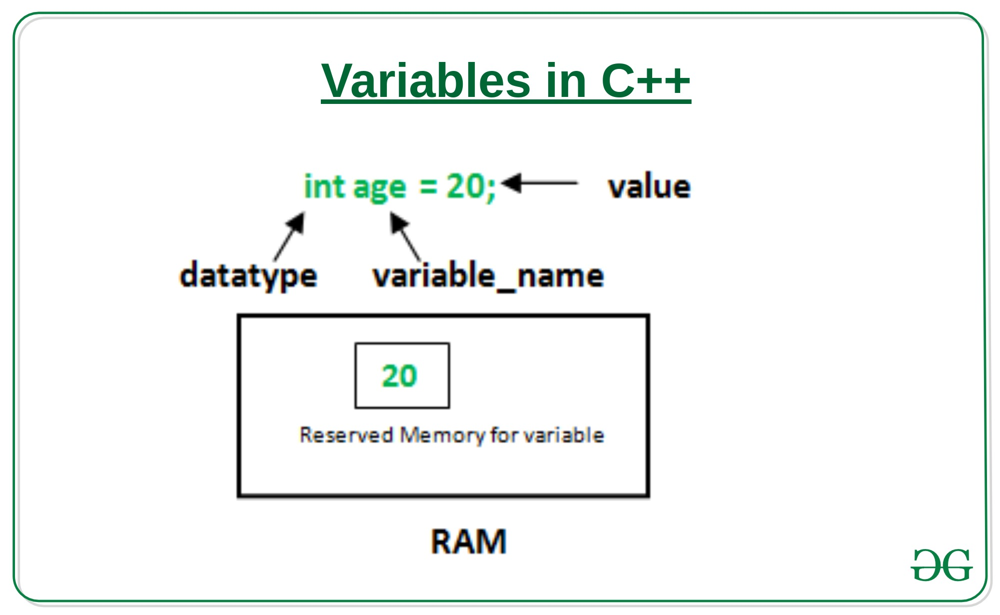

Basic Materials of C++
Table of Contents
1 程式的編寫與執行
1.1 source code
所謂的程式碼基本上都只是一些文字檔，只是這些文字的撰寫是依照不同語言(如 C、C++、Python、R…)所規定的語法(syntax)來撰寫，以達到特定目的。
1.2 編寫
既然程式碼只是文字檔，所以，其實我們可以很單純的以 windows 的記事本或是 MacOS 中的 TextEdit 來編寫各種語言的程式碼，只是，使用這些應用程式來編寫程式會相對辛苦，因為相對於一些專用的應用程式如 DevC++、VSCode、PyCharm 等都會提供撰寫者許多的額外功能，例如即時除錯、自動縮排、自動補完(auto complete)，甚至是後續的編譯、執行..。
1.3 編譯與執行
既然寫完的程式碼只是文字檔，那這些文字檔要如何變成可以執行的執行檔呢？如下圖1所示：

Figure 1: Compile and Execution
程式碼必須先經過 Preprocess、Compile、Assemble、Link 等步驟才能成為一支可以執行的執行檔(如 Windows 下的.exe 或是 MacOS 下的.app)。
1.4 幾種寫程式的環境
1.4.1 MacOS
1.4.2 Windows
2 C++基本架構
1: #include <iostream> 2: using namespace std; 3: 4: int main() 5: { 6: cout << "Hello world\n"; 7: return 0; 8: }
Hello world
2.1 main()
C/C++的程式由許多的 function(函式)組成，function 的基本架構如下：
傳回值類型 函式名稱() { 函式內容 retrun 傳回值 }
前述程式中的第4行開始即為一名為 main 的 function，這也是 C/C++程式最主要的一支 function，程式被執行時，就由整支程式中找出名為 main 的 function 開始執行。之後我們的程式也將依序寫在這組大括號中。
2.2 標頭檔(Headers)
上述程式中，第1行為標頭檔(Header)的引入，這裡告訴 Compiler 說我需要用到 iostream 這個 header，原因是程式的第6行用到 cout 這個指令，而這個指令就被定義在 iostream 這個 header 中，其中的 io 即代表 input/output。
往後如果用到其他函數，也需要 include 相關的 header，例如，如果需要用到數學的開根號函式 sqrt()，就需要 include math.h 這個 header，如下例中的第1行。
1: #include <iostream> 2: #include <math.h> 3: using namespace std; 4: 5: int main() 6: { 7: cout << sqrt(100) << endl; 8: return 0; 9: } 10:
10
2.3 命名空間(namespace)
一支程式往往會用到許多的指令、函式、變數，不同單位所開發的程式也許會用到相同的名稱來為這些函式或變數命名，如此一來就可能導致名稱的衝突。舉個例子，在一年級新生中，有三個班級裡都有個叫*陳宜君*的同學，那麼我們怎麼區分這三位同學呢？一個方式在提及這些同學時在前面加上班級，如：一年三班的陳宜君。
C++就提出這種方式來解決名稱可能衝突的問題，以下面程式為例：
1: #include <iostream> 2: int main() { 3: std::cout << "每次用到cout都指定namespace"; 4: return 0; 5: }
每次用到cout都指定namespace
上例的第3中的 std::就是 C++的標準命名空間，用來說明這裡所用的 cout 是 C++預設的指令，但是如果你並沒有命名衝突的問題，其實可以一開始就直接把 namespace 設定為 std，如下面程式中的第2行。
1: #include <iostream> 2: using namespace std; 3: int main() { 4: cout << "用到cout時不用再特別指定namespace"; 5: return 0; 6: }
用到cout時不用再特別指定namespace
有關於 namespace 的詳細說明，可參考簡介名稱空間以及Use a function in different file and different namespace in Visual C++這兩篇文章。
3 輸出
顧名思意，輸出是將資料輸出到某種設備（如螢幕、印表機…）, 常見的輸出指令有 cout、printf()、puts()、putchar()等。
3.1 cout
cout 為 iostream 這個類別(class)的 object2，所以程式中若使用到 cout 就必須 include iostream。cout 可以將文字資料與變數資料列印在螢幕上，在語法上會使用<<作為文字與變數之間的連接工具，若要換行則使用“\n”或是關鍵字 endl3。
如果要輸出的是文字資料，則應該在文字的前後各加上英文的雙引號(“)，如下列程式的第4行，不同類型的數值資料間要以<<間隔。
1: #include <iostream> 2: using namespace std; 3: int main() { 4: cout << "Hello world\n"; 5: cout << "半徑：" << 3 << endl; 6: cout << "圓面積：" << 3*3*3.1416 << "\n"; 7: return 0; 8: }
Hello world 半徑：3 圓面積：28.2744
3.2 printf()
printf()為定義在 stdio.h 中的一個 function，所以若用到 printf()就要 include stdio.h。
和 cout 一樣，printf()一樣是用來進行資料的輸出，只是在輸出時提供了更多的格式選定選項。基本的應用如下例，更複雜的應用則在介紹完變數(vairalbe)概念後再行說明。
1: 2: #include <stdio.h> 3: using namespace std; 4: int main() { 5: printf("Hello world\n"); 6: printf("半徑：%d\n", 3); //%d表示在該處要顯示/輸出一個整數 7: printf("圓面積：%.2f\n", 3*3*3.1416); //%.2f: 表示在該處要顯示/輸出一個小數，精確度達到小點點後第二位 8: return 0; 9: }
Hello world 半徑：3 圓面積：28.27
3.3 跳脫字元
如果你試過利用 C++來輸出下列這段話：
他說：“好”，然後他就死了。
你會發現這是件困難的事，在前節的 cout 中，我們提及雙引號是用來將文字括起來的符號，若在字串中也出現雙引號，則勢必會打亂雙引號在文字中的規則。要輸出這類特殊字元的問題，有以下兩種方法：
3.3.1 cout + 單引號
以兩個單引號將雙引號括起來，如下列程式。
1: #include <iostream> 2: using namespace std; 3: int main() { 4: cout << "他說："<< '"' << "好" << '"' << "，然後他就死了。\n"; 5: }
他說："好"，然後他就死了。
3.3.2 加上跳脫字元
即，在字串中的雙引號前加上\，變成\“，如下
1: #include <iostream> 2: using namespace std; 3: int main() { 4: cout << "他說：\"好\"，然後他就死了。\n"; 5: }
他說："好"，然後他就死了。
常用的跳脫字元還有以下幾類：
| 字元 | 意義 |
| \’ | 單引號 |
| \“ | 雙引號 |
| \\ | 反斜線 |
| \0 | 空字元(NULL) |
| \t | 定位字元(TAB) |
| \n | 換行字元(ENTER) |
4 Variable
4.1 關於變數
A variable is a name given to a memory location. It is the basic unit of storage in a program4.
- The value stored in a variable can be changed during program execution.
- A variable is only a name given to a memory location, all the operations done on the variable effects that memory location.
- In C++, all the variables must be declared before use.
4.2 變數的宣告與應用
變數是資料的標籤，而非資料本身。電腦程式很大一部分是在操作資料，變數在本質上是用來操作資料的一種語法特性。5

Figure 2: Variables in C++
C 語言的變數宣告語法如下：
變數類型 變數名稱[=初值];
以下列程式為例，第4行宣告了一個名為 r 的整數型態(int)變數，這意謂著向記憶體要了塊足以儲存整數資料的空間，並將之命名為 r，並在第6將整數 5 存入這個空間中，爾後只要在程式中提及 r，指的便是 5 這個值。這裡的等號運算子其作用為指定(assign)，即是將等號*右邊*的值存入等號*左邊*的變數(空間)中。
在第5行宣告了一個名為 cirArea 的小數變數，接下來在第7行先計算出圓面積的值，再把這個值存入這個小數變數空間中。
1: #include <iostream> 2: using namespace std; 3: int main() { 4: int r; 5: double cirArea; 6: r = 5; 7: cirArea = r * r * 3.1416; 8: cout << "圓面積：" << cirArea << endl; 9: }
圓面積：78.54
4.3 變數的命名規則
- 可用字母、數字、底線。
- 第一個字不可為數字，如 1x, 2x…，可以為 x1, x2…。
- 名稱間不可有空白。如 student no，可以 studentId 或是 studentId 取代。
- 大小寫有別(Case-Sensitive): a 與 A 為兩個不同的變數。
- 不可使用關鍵字(如 int, double, if, while…)。
- 底線開頭接大寫字母應保留給系統使用。
更詳細的命名規範與建議可參閱：C語言中變數名及函式名的命名規則與駝峰命名法。
4.4 變數類型
前節介紹了變數的宣告要先說明其類型，根據要儲存的資料種類不同，C++變數有許多型態。以下是一些常用的基本型態6：型態 中文意思 英文字義 |可儲存的資料
| int | 整數 | Integer | 100、-5、1246 … |
| float | 32 bit 單精浮點數(小數) | single precision floating point | 3.14159、4.3、-1.1 … |
| double | 64 bit 倍精浮點數(小數) | double precision floating point | 3.14159、4.3、-1.1 … |
| char | 字元(半形字) | Character | ’a’、’R’、’1’、’@’、’*’ … |
| string | 字串(文句) | String | “Hello”、“^_^”、“Rock!” … |
| bool | 布林(是非) | boolean | true、false |
關於 float 與 double 的進一步說明，可參閱：float跟double小知識。
5 輸入
5.1 變數的輪入
前節提及變數的宣告、指定內容以及輸出變數，然而在程式內容中指定變數值實在很沒有彈性，我們可以透過輸入(cin)的方式將指定變數值的時機延後到程式執行時，由使用者來指定，例如：
1: #include <iostream> 2: using namespace std; 3: int main() { 4: double r; 5: double area; 6: cin >> r; 7: area = r * r * 3.14; 8: cout << "半徑 " << r << "的圓，其面積為: " << area << "\n"; 9: }
程式在執行至第6行中的 cin 時會暫停，等待使用者自鍵盤輸入一數值，並將該數值存入變數 r 中，接下來再以這個 r 來計算圓面積(第7行)，最後輸出其面積。
5.2 一個以上的變數輸入
如果要輸入多個變數，可以採以下兩種方式(類似 cout 的做法)
5.2.1 分開 cin
1: //... 2: int x, y, z; 3: cin >> x; 4: cin >> y; 5: cin >> z; 6: //...
5.2.2 以>>串接
1: //... 2: int x, y, z; 3: cin >> x >> y >> z; 4: //...
6 運算式
6.1 指定運算
最基本的運算子為=(assign)，即，將資料(數值、字元或字串)存入某變數空間中，如:
1: #include <iostream> 2: using namespace std; 3: int main() { 4: int x, y, z; 5: x = 3; 6: y = 4; 7: z = x + y; 8: cout << z << endl; 9: x = 10; 10: z = x + y; 11: cout << z << endl; 12: } 13:
7 14
指定運算除了可以將其他變數的計算結果存入變數中(如上述程式中的第7、10行)外，也可以將變數本身的值再運算後存回來，如：
1: #include <iostream> 2: using namespace std; 3: int main() { 4: int x; 5: x = 3; 6: cout << x << endl; 7: x = x + 1; 8: cout << x << endl; 9: x++; // 同x = x + 1 10: cout << x << endl; 11: x = x * 3; 12: cout << x << endl; 13: } 14:
3 4 5 15
如同4.2所述:
等號運算子其作用為指定(assign)，即是將等號*右邊*的值存入等號*左邊*的變數(空間)中
，上述程式中的第7行是先求出 x+1 的值(4)，再將這個值存回變數 x 中，這個運算也可以第9取代；同理，程式中的第11行是先將 x 的值乘以 3，再把結果存回變數 x 中。
6.2 數值運算
C/C++的基本數值運算有+、-、*、/、%，最後的%為取餘數。
1: #include <iostream> 2: using namespace std; 3: int main() { 4: int x = 10, y = 3; 5: cout << x + y << endl; 6: cout << x - y << endl; 7: cout << x * y << endl; 8: cout << x / y << endl; 9: cout << x % y << endl; 10: }
13 7 30 3 1
此處須留意的是第8行的值為整除的結果(得到商)，因為 x 與 y 均為整數，故此處的/為整除；此外，第9的%運算僅能用於 x 與 y 均為整數的狀況，在 C/C++中，小數不允許有取餘數的運算(python 可以)。
數除運算也可以結合小括號來進行更複雜的運算，如：
1: //... 2: int t = 10; 3: double up = 10.3; 4: double bt = 20.4; 5: double height = 15; 6: double area; 7: area = ((up + bt) * height / 2) * 10; 8: // ...
此處須留意，小刮號可以層層相叠，但不能像數學式那樣最內層為小括號、然後是中刮號、大刮號…
6.3 關係運算
即，比較兩個值(或運算式)的結果，可的關係運算子如下：
| 關係運算子 | 意義 | 使用範例 | 範例運算結果 |
| == | 等於 | 1+1 == 2 | 1 |
| != | 不等於 | 3 != 4 | 1 |
| > | 大於 | 5 > 7 | 0 |
| >= | 大於等於 | 3 >= 5 | 0 |
| < | 小於 | 2 < 6 | 1 |
| <= | 小於等於 | 8 <= 8 | 1 |
6.4 條件運算
上述關係運算所得的條件值(true/false)也可以再進行運算，而運算的結果也只有兩類: true/false。最基本的條件運算有以下三項：
6.4.1 &&, and
且，只有在兩項條件均成立時其運算結果才是 true，否則其結果為 false，如
1: #include <iostream> 2: using namespace std; 3: int main() { 4: int x = 3; 5: int y = 4; 6: cout << (x >= 3 && y >= 0) << endl; 7: cout << (x == 3 && y > 4) << endl; 8: }
1 0
6.4.2 ||, or
1: #include <iostream> 2: using namespace std; 3: int main() { 4: int x = 3; 5: int y = 4; 6: cout << (x >= 3 || y < 0) << endl; 7: cout << (x != 3 && y > 14) << endl; 8: }
1 0
6.4.3 !, not
1: #include <iostream> 2: using namespace std; 3: int main() { 4: int x = 3; 5: int y = 4; 6: cout << !(x >= 3) << endl; 7: cout << !(x == 3 && y > 4) << endl; 8: }
0 1
如果數值運算，條件運算也結合小刮號進行更複雜的計算。
7 if 條件判斷
if 判斷式可用來判斷條件是否成立，並且依照條件之成立與否，來執行不同的程式碼7。依照條件的複雜程度可大致分為以下三類：
7.1 單一條件
7.1.1 語法
最簡單型式的條件式如下，即，當條件成立，則執行程式碼。
if (條件) { 程式碼; }
7.1.2 範例
若分數及格，則輸出 PASS
1: #include <iostream> 2: using namespace std; 3: int main() { 4: int score; 5: score = 87; 6: if (score >= 60) { 7: cout << "PASS\n"; 8: } 9: }
PASS
7.2 條件運算(條件的組合)
在前節的範例中，我們看到的是最簡單的條件，如
1: if (score >= 60) { 2: ... 3: }
然而，更多時候我們要處理的是多種條件的組合，例如：輸入一分數，若所輸入的分數不合理(大於 100 或小於 0)，則輸出“請重新輸入”。雖然我們可以利用以下的寫法來解決問題：
1: #include <iostream> 2: using namespace std; 3: int main() { 4: int score; 5: score = -19; 6: if (score < 0) { 7: cout << "請重新輸入\n"; 8: } 9: if (score > 100) { 10: cout << "請重新輸入\n"; 11: } 12: }
但更適合的是利用條件運算來處理問題，如下：
1: #include <iostream> 2: using namespace std; 3: int main() { 4: int score; 5: score = -19; 6: if ((score < 0) || (score > 100)) { 7: cout << "請重新輸入\n"; 8: } 9: }
請重新輸入
上述的||即為條件運算子，代表 OR。
C++的條件運算子列表如下：
| 運算子 | 名稱 | 範例 | 說明 |
| && | AND | ( 條件 1 && 條件 2) | 當條件 1、2 皆成立時才算成立 |
| || | OR | ( 條件 1 || 條件 2) | 只要條件 1、2 有一項成立就算成立 |
| ! | Not | !（條件 1) | 當條件 1 不成立時就成立 |
7.3 雙重條件
7.3.1 語法
若條件的可能性可分為兩類，則可使用如下 if..else..的條件式，即:
- 當條件成立，則執行程式碼一，
- 否則(若條件不成立)，則執行程式碼二。
if (條件) { 程式碼一; } else { 程式碼二; }
7.3.2 範例
若分數及格，則輸出 PASS，否則輸出 FAIL
1: #include <iostream> 2: using namespace std; 3: int main() { 4: int score; 5: score = 57; 6: if (score >= 60) { 7: cout << "PASS\n"; 8: } else { 9: cout << "FAIL\n"; 10: } 11: }
FAIL
7.3.3 練習
- 輸入一分數，若該分數合理(介於 0~100 間`)，則繼續判斷是否及格，若及格則輸出 PASS，若不及格則輸出 FAIL；若該分數不合理，則輸出: 請重新輪入。
- 輸入一元二次方程式 ax2+bx+c=0 中的 a,b,c 三參數，判斷此方程式是否有實數解，若有，則輸出 x 的兩個解；若無實數解，則輸出 QQ。
7.4 多重條件
7.4.1 語法
- 當要判斷的條件可能性超過兩種，則可以用如下的 if..else if..條件式，即，
- 當條件一成立，則執行程式碼一；
- 若條件一不成立，則繼續判斷條件二，若條件二成立，則執行程式碼二；
- 若條件二也不成立，則繼續判斷條件三…依此類推。
- 最後的 else(第else行則可有可無，若有，則表示如果以上所有條件皆不成立，則執行程式碼 N。
if (條件一) { 程式碼一; } else if (條件二) { 程式碼二; } else if (條件三) { 程式碼三; } ... { } else { (else) 程式碼N }
7.4.2 範例
將分數轉成等第(A, B, C…)
1: #include <iostream> 2: using namespace std; 3: int main() { 4: int score = 79; 5: if (score >= 90) { 6: cout << "A\n"; 7: } else if (score >= 80) { 8: cout << "B\n"; 9: } else if (score >= 70) { 10: cout << "C\n"; 11: } else if (score >= 60) { 12: cout << "D\n"; 13: } else { 14: cout << "F\n"; 15: } 16: }
C
7.5 巢狀條件
上節中提及若 if 後的件條成立，則執行大括號中的程式碼，此段程式碼也可以是 if 條件本身，如：
7.5.1 語法
if (條件1) { 程式碼...; if (條件2) { 程式碼...; } 程式碼...; } else { 程式碼...; }
7.5.2 範例
1: #include <iostream> 2: using namespace std; 3: int main() { 4: int pass; 5: cin >> pass; 6: bool userIsAdmin = true; 7: if (pass == 1234) { 8: if (userIsAdmin == true) { 9: cout << "管理者，有root權限"; 10: } else { 11: cout << "為一般使用者，權限有限"; 12: } 13: } else { 14: cout << "輸入密碼錯誤"; 15: } 16: }
輸入密碼錯誤
8 For Loops
計算機的優勢除了運算速度之快，更重要的是它十分適合拿來做一些重複性極高的工作，例如，幫所有同學計算月考平均、幫全國所有家庭計算須繳所得稅….，For 迴圈即是許多語言用來執行重複工作的指令。
8.1 語法 1 (要重複的程式碼只有一行時)
1: for (初始值; 條件式; 更新值) 程式碼;
8.2 語法 2 (要重複一行以上程式碼時)
1: for (初始值; 條件式; 更新值){ 2: 程式碼一; 3: 程式碼二; 4: ... 5: }
初始值 是進入迴圈一開始會執行的動作，而 更新值 則是執行完每次的迴圈要執行的動作，至於重複的次數則取決於 條件式 是否成立，只要 條件式 一直成立(其計算結果為 true)，則持續重複執行程式碼；所以要利用 更新值 來逐步修正，讓條件值有機會傳回 false。
8.3 範例
1: #include <iostream> 2: using namespace std; 3: 4: int main() { 5: for (int i = 1; i < 10; i++) { 6: cout << "3 * " << i << " = " << 3*i << endl; 7: } 8: return 0; 9: }
3 * 1 = 3 3 * 2 = 6 3 * 3 = 9 3 * 4 = 12 3 * 5 = 15 3 * 6 = 18 3 * 7 = 21 3 * 8 = 24 3 * 9 = 27
以上述程式為例，其程式執行的步驟如下：
9 Nested For Loop
9.1 語法
1: for (初始值1; 條件式1; 更新值1) { 2: for (初始值2; 條件式2; 更新值2) { 3: 程式碼一; 4: 程式碼二; 5: ... 6: } 7: }
9.2 範例
10 While
10.1 While
10.1.1 語法
1: while( 條件式1 ) { 2: 程式碼1; 3: 程式碼2; 4: }
while 與 for 均為重複結構，比較起來，while 的語法結構更為簡單，但撰寫者要自行處理的事也更多一些。上述語法的執行流程為:
- 若 while 後的 條件 1 成立，則執行一次大括號內的所有程式碼
- 回到 1.
由上述結構也可以看出，我們必須想辦法讓 條件 1 有機會不成立，否則這個 while 迴圈就會一直重複下去。
10.1.2 範例
1: #include <iostream> 2: using namespace std; 3: 4: int main() { 5: int i = 9; 6: while (i > 0) { 7: cout << "3 * " << i << " = " << 3*i << endl; 8: i--; 9: } 10: return 0; 11: }
3 * 9 = 27 3 * 8 = 24 3 * 7 = 21 3 * 6 = 18 3 * 5 = 15 3 * 4 = 12 3 * 3 = 9 3 * 2 = 6 3 * 1 = 3
10.2 Do … while
11 Array
12 function
12.1 function declaration
12.2 function define
12.3 compute n!
#include <iostream> using namespace std; int n(int x) { if (x==1) { return 1; } else { return x*n(x-1); } } int main() { int hi = 9; cout << n(8) << endl; }
13 Struct
結構 (structure) 是一種複合型別 (derived data type)，用來表達由多個屬性組成的型別，而這些屬性可以是基本型別或是另一個複合型別所組成。8 , 9
1: #include <iostream> 2: #include <string.h> 3: using namespace std; 4: 5: struct student{ //名稱為student的結構 6: int id; //學號為整數型 7: char name[20]; //姓名為字元陣列 8: char sex; //性別為字元型 9: float score; //成績為浮點型 10: }; 11: 12: int main() { 13: student s1, s2, s3; 14: s1.id = 90001; 15: strcpy(s1.name, "James, Yen"); 16: s1.sex = 'F'; 17: s1.score = 88.88; 18: } 19:
14 ditaa